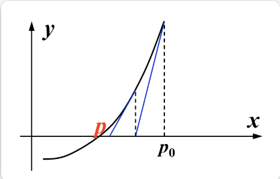

Red-Black Trees and B+ Trees¶
1. Red-Black Trees¶
[!note] - 在红黑树中，「叶子节点」特别指的是空节点(nil)
1.1 Definition¶
红黑树(red-black trees)==本质上也是二叉查找树，它和AVL Tree一样能维护平衡，下图表示的是红黑树的一个节点：

[Property]
Red-Black Tree 红黑树是一棵满足下面几条性质的二叉查找树：
1. 每个节点的颜色非黑即红
2. 根节点是黑色的
3. 每个叶子节点(NIL)是黑色的
- 这里的「叶子结点」特指空节点 NIL
- 如果定义中缺少这一性质，那么skew tree和链表都有可能符合红黑树的定义
4. 如果一个节点是红色的，那么它的孩子都是黑色的
- 红色节点要么有两个黑孩子，要么没有孩子，不会出现红色节点相邻的情况，也不会出现红色节点只有一个孩子的情况（否则下面的性质不会满足）
- 在红黑树中，实际存在的节点被称为==内部节点(internal node)，而空节点被称为==外部节点(external node)
5. 对于每个节点，从该节点出发，到它后代叶子节点（即 NIL 节点）的所有简单路径包含了相同数量的黑色节点（这是实现红黑树平衡的关键）

[Definition] 黑高(black height) \(\mathrm{bh}(x)\)：从节点 \(x\) 出发到叶子节点的任意简单路径上黑色节点的个数（不包括节点 \(x\)） - 根据定义的性质，由于每条简单路径的黑色节点数相同，所以可以任意选取其中1条路径 - 整棵树的黑高等于根节点的黑高
[!note] 黑高从 0 开始数，并且要数 NIL
[Lemma] 引理：一棵有 \(N\) 个内部节点的红黑树，它的高度至多为 \(2\log (N+1)\). 证明: 1. 对于任意节点 \(x\)，\(\mathrm{sizeof}(x) \ge 2^{\mathrm{bh}(x)} - 1\) 2. \(\mathrm{bh}(Tree) \ge \dfrac{h(Tree)}{2}\) 不等式1 - 采用数学归纳法证明 \(\mathrm{sizeof}(x) \ge 2^{\mathrm{bh}(x)} - 1\)
[!prove] - 当 \(h(x)=0\) 时，\(x\) 是空节点，\(sizeof(x)=2^0−1=0\) - 归纳假设：对于满足 \(h(x)\leq k\) 的节点 \(x\)，该不等式均成立 - 当 \(h(x)=k+1\) 时，\(bh(child)=bh(x)\) 或者 \(bh(x)−1\) - 因为 \(h(child)≤k\)，所以 \(sizeof(child)\geq 2^{bh(child)}−1≥2^{bh(x)−1}−1\) - 所以 \(sizeof(x)=1+2sizeof(child)≥2^{bh(x)}−1\)，得证
不等式2
[!prove] - 由定义知，对于每个红色节点，它的孩子都是黑色的，因此从根节点到叶子结点的所有简单路径上，至少有一半的节点（不包括根节点）是黑色的，即不等式2成立
由两个不等式可以得到： $$ \mathrm{sizeof}(root) = N \ge 2^{\mathrm{bh}(Tree)}-1 \ge 2^{\frac{h}{2}}-1 $$ - 即 \(h \le 2 \log(N+1)\)
1.2 Operations¶
1.2.1 Insertion¶
为了保持平衡，尽可能不改变红黑树的黑高，新插入节点的颜色应该是红色的 - 若新插入节点的父节点是黑色的，无需调整 - 若父节点是红色的情况，分情况调整如下
初始状态¶

Case 1¶
新插入节点的父节点，以及父节点的兄弟节点都是红色的
先插入 \(5\) 再插入 \(4\), \(4\) 和 \(5\) 是相邻的红色节点，没有满足性质 4，所以开始调整
 Solution
Solution
 - 交换父亲节点、父亲的兄弟节点与祖父的颜色
- 调整后有四种情况：
- 祖父节点是根节点的时候，让根节点变黑即可（图的最右侧）
- 调整完一次后，这棵子树的上一级子树（红框表示染色后的子树）还在讨论的三种情况内
- 交换父亲节点、父亲的兄弟节点与祖父的颜色
- 调整后有四种情况：
- 祖父节点是根节点的时候，让根节点变黑即可（图的最右侧）
- 调整完一次后，这棵子树的上一级子树（红框表示染色后的子树）还在讨论的三种情况内
Case 2¶
新插入节点是其祖父节点（黑色）的LR或RL孙子节点

在Case 1交换颜色后，虽然节点4那一部分合法了，但是它的祖父(7)和曾祖父(2)却都是红色的，所以还得继续调整。
调整

- 类似AVL树的旋转，这个调整没有使这棵树变得合法，而是将它调整至Case 3的形状（LR -> LL）
注：Case 2还有一种对称情况（RL -> RR），调整方法类似。
Case 3¶
新插入节点是其祖父节点（黑色）的LL或RR孙子节点

调整

- 一次旋转 + 一次换色即可（两次操作的顺序并不重要）
注：Case 3也有一种对称情况（RR）
状态图

- 在整个调整的过程中，只需要常数次的旋转和染色，就可以使子树恢复为合法的红黑树（即保持平衡）。而最坏的情况是需要不断向上维护子树的平衡，直至根节点为止，因此插入的效率和AVL树差不多，均为 \(O(\log N)\)
注：迭代实现比递归实现速度上略快一点，但不多。 - Case 4：向空树插入新节点 -> 将该节点染黑即可 - Case 5：父节点是黑色的 -> 啥也不用动
1.2.2 Deletion¶
删除操作：1. 删除树中节点 2. 维护红黑树的平衡
删除节点
- Delete a leaf node：将其 parent link 指向 NIL
- 若该节点为红色：直接删除即可
- 若该节点为黑色：改变了树的黑高，后续需要==维护平衡==
- Delete a degree 2 node：用左子树最大节点或右子树最小节点的值替代被删除的节点的值（保持颜色不变），然后将用于替代的节点从原来的位置中删除
- 最终会转化为 Delete a degree 1 node
- Delete a degree 1 node：用它的子节点替代原节点
- 若孩子为红色 -> 该节点为黑色 -> 直接用孩子替代该节点并染黑即可
- 若孩子为黑色 -> 该节点可红可黑
- 该节点为红色 -> 直接用孩子（值+颜色）替代该节点
- 该节点为黑色 -> 删除后由于打破最后一条性质，需要==重新维护==
平衡维护（共 4 种情况）
- 用X 表示当前需要维护的节点
- 如果是 leaf node，则 x 是它本身
- 如果不为 leaf node，则 x 是替代他的那个节点
- 令它的颜色是双黑（即有两层黑色，多出来的那层黑色来自它下面的黑色节点或 NIL 节点），通过消除红黑树的双黑节点，进而恢复整棵树的平衡。根据不同的情况，将“双黑节点”多出来的黑色分给红色节点或者根节点（根节点是双黑的话就直接变成黑色即可），从而消除双黑。
Case 1¶
X的兄弟节点S是红色的，这时无法通过简单的旋转或染色使其满足所有性质，我们先让部分区域先满足所有性质，之后再维护剩余部分。
| 初始状态 | 旋转后 | 染色后 |
|---|---|---|
 |
 |
 |
| 若 X 是 P 的左孩子，则左旋 P；否则右旋 P | 将兄弟节点 S 染黑，父节点 P 染红 | 操作缩小了调整部分的规模（整棵子树 -> 部分子树【左孩子】）至于剩下的部分，继续分情况讨论 |
Case 2¶
X的兄弟及兄弟的两个孩子都是黑色的（不考虑X父节点的颜色） 
| 初始状态 | 染色后 |
|---|---|
 |
 |
| - 首先染红 X 的兄弟 S - 然后将 X 的黑色丢给它的父节点 P - 若原来 P 为红色，则现在 P 为黑色（结束） - 若原来 P 为黑色，则现在 P 为双黑 |
- 如果染色后 P 为黑色，那么这棵子树处理结束 - 如果染色后 P 为双黑，则将 P 作为当前要维护的节点，继续向上调整 |
Case 3¶
兄弟节点S是黑色的；兄弟节点靠近内侧的孩子（LR、RL）是红色的，靠近外侧的孩子（LL、RR）是黑色的；父节点的颜色可红可黑

| 初始状态 | 旋转后 | 染色后 |
|---|---|---|
 |
 |
 |
| 若 X 为左孩子，右旋 S； 否则左旋 S | 将 S 染红，L 染黑 | 此时这棵树满足 Case 4 |
Case 4¶
兄弟节点S是黑色的；兄弟节点靠近内侧的孩子（LR、RL）可红可黑，靠近外侧的孩子（LL、RR）是红色的；父节点的颜色可红可黑

| 初始状态 | 旋转后 | 染色后 |
|---|---|---|
 |
 |
 |
| 若 X 为左孩子，则左旋 P；否则右旋 P | 交换 P 和 S 的颜色，并且将 X 的一层黑色分给 R，这样 X 和 R 就均为黑色 | 此时整棵子树是一棵合法的红黑树了 |
状态图：

AVL 树和红黑树的效率比较（插入/删除单个节点所需的旋转次数）
| Operation | AVL Tree | Red-Black Tree |
|---|---|---|
| Insertion | \(\le 2\) | \(\le 2\) |
| Deletion | \(O(\log N)\) | \(\le 3\) |
- AVL树的最差高度略低于红黑树，因此如果有频繁的访问操作，推荐使用AVL树
- 红黑树的优势在于删除所需旋转次数是常数级复杂度的，而AVL树的删除需要\(O(\log N)\)次旋转，如果有频繁的删除操作，推荐使用红黑树
- 红黑树的节点只需存储1位颜色字段，而AVL树至少需要2位来存储平衡因子
- 总体而言，红黑树的运行效率比AVL树快了大概 \(10\%\) ~ \(20\%\) 左右
2. B+ Trees¶
B+树是B树的改良版，广泛应用于关系型数据库和操作系统的文件系统中。
2.1 Definition¶
\(M\) 阶(order) B+树遵循以下结构上的性质：
1. 根节点要么是叶子节点，要么有 \(x\) 个孩子，其中 \(x \in [2 , M]\)
2. 所有非叶子节点（除了根节点）有 \(y\) 个孩子，其中 \(y \in [\lceil M/2\rceil , M]\)
3. 所有的叶子位于相同深度的位置上
此外，
- 所有数据实际上只存储在叶子节点上，每个叶子节点就是一个块
- 每个内部节点存储 \(M\) 个指针（部分为空指针），以及 \(M-1\) 个来自每棵子树的最小值（第一棵子树除外）
Example - 这是一棵四阶B+树（类似2-3-4树（每个节点可以有2/3/4个孩子））

- 黑色方块表示空指针
- 标红的数字表示当前子树中的最小值，它会被存储于父节点中
2.2 Operations¶
这是原始数据，每个存储块存有2-3个数据（不得超过这个范围），存储块内的数据按升序排列

我们先根据这些存储块，自底向上创建一棵三阶B+树：

查找52 - 查找过程类似二叉查找树，也是自顶向下寻找，找的数偏大往右找，偏小往左找

插入18 - 先看下面的存储块有没有空余的地方——在该情况中是有的，那就直接插入存储块内（还得检查是否修改父节点的元素，这里不需要）

插入1

- 通过查找发现，我们要插入的数据块（蓝色）的数据已满，那么就看能否将这个数据块一分为二，即父节点能否再多一个孩子，可以的话执行操作并修改父节点的数据

插入19

- 这时数据块和它的父节点都满了，所以要向祖父节点寻找空位，再多给一个叔叔节点，将一分为二后的数据块放在叔叔节点上，最后修改父节点和祖父节点的数据

插入28

- 此时数据块和它的所有祖先都满了，那就只能产生一个新的根节点（添加新的一层）存放节点

- 在插入操作中我们运用的是简单的分裂法，这会产生很多的叶子节点（存储块），从而导致树的增高
删除操作与插入类似，但要注意：如果一个根节点失去两个孩子时，要移除这个根节点。
伪代码实现
c
Btree Insert(ElementType X, Btree T) {
Search from root to leaves for X and find the the proper leaf node;
Insert X;
while (this node has M+1 keys) {
split it into 2 nodes with RoundUp((M+1) / 2) and RoundDown((M+1) / 2) keys respectively;
if (this node is the root)
create a new root with two children;
check its parent;
}
}
对于一棵有\(N\)个数据的\(M\)阶B+树：
- 深度\(\mathrm{Depth}(M, N) = O(\lceil \log_{\lceil \frac{M}{2} \rceil} N \rceil)\)
- 插入时间\(T(M, N) = O(\dfrac{M \cdot \log N}{\log M}) = O(M \log_M N)\)
- 所以阶数\(M\)不是越大越好，最合适的取值为3或4
- 查找时间\(T_{Find}(M, N) = O(\log_M N) \le O(\log N)\)